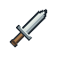

Opção A
Cobre clássico
Cobre quente, próximo da paleta das ferramentas de cobre do jogo.

Redução a 16 × 16

Tamanho real:

Base: mesma silhueta da Espada A (escolhida). Só muda a paleta do metal para cobre. Nada implementado no jogo.
Quatro variações de paleta de cobre para comparar. Cada opção aparece ampliada e em 16×16.
Cobre clássico
Cobre quente, próximo da paleta das ferramentas de cobre do jogo.
Tamanho real:
Cobre polido
Mais claro e brilhante, com leitura de metal recém-fundido.


Tamanho real:
Cobre avermelhado
Tom mais vermelho/queimado, lembrando cobre bruto e forja.


Tamanho real:
Cobre envelhecido
Mais escuro e sóbrio, com menos brilho e sensação de uso.


Tamanho real: